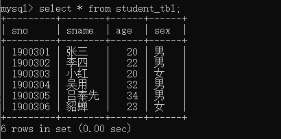
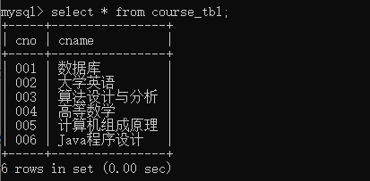
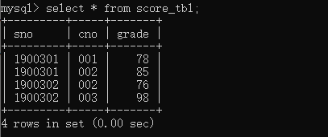
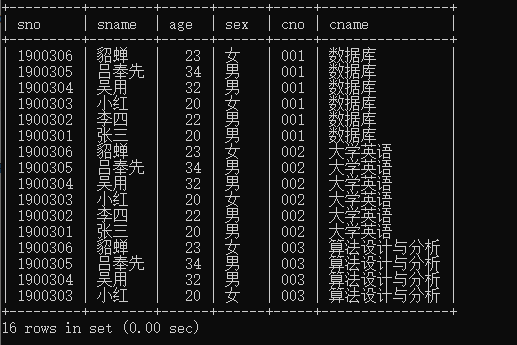
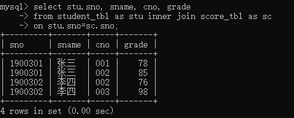
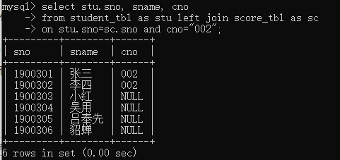
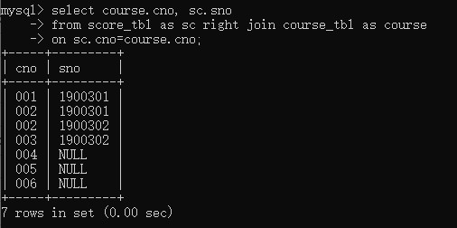
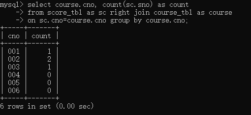
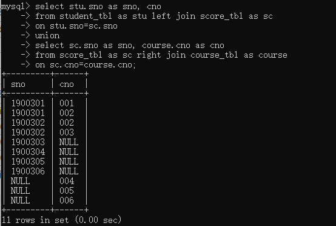
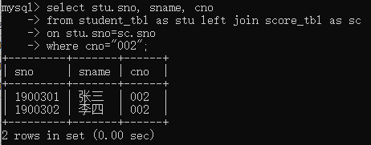

数据库系统概述
数据、DB、DBMS、DBS
-
数据（Data）：描述事物的符号记录。数据的解释是指对数据含义的说明，即语义。
-
数据库（DataBase，DB）：数据库数据具有永久存储、有组织和可共享三个基本特点。
-
数据库管理系统（DataBase Management System，DBMS）：功能如下
- 数据定义。
- 数据组织、存储和管理：数据字典、用户数据、数据存取路径。【数据组织和存储的基本目标是提高存储空间利用率和存取效率。】
- 数据操纵：增、删、改、查等。
- 数据库的事务管理和运行管理：数据的安全性、完整性、多用户对数据的并发使用，故障后系统恢复。
- 数据库的建立和维护：数据库建立、转储、恢复，数据库的重组织、性能监视、分析功能。
- 与其他系统网络通信等：一个DBMS和其他DBMS或文件系统的数据转换功能，异构数据库之间的互访和互操作功能。
-
数据库系统（DataBase System，DBS）：由DB、DBMS（及其应用开发工具）、应用程序和数据库管理员（DataBase Administrator，DBA）组成的存储、管理、处理和维护数据的系统。
数据库的特点
-
整体数据结构化。【所谓“整体”结构化是指数据库中的数据不再仅仅针对某一应用，而是面向整个组织或企业；不仅数据内部是结构化的，而且整体是结构化的，数据之间是具有联系的。】
-
数据的共享性高、冗余度底且易扩充。
-
数据独立性高。
- 物理独立性：指用户的应用程序与数据库中的数据物理内存是相互独立的。
- 逻辑独立性：指用户的应用程序与数据库中的逻辑结构是相互独立的。
-
数据由DBMS统一管理和控制
- 数据的安全性保护：保护数据以防止不合法使用造成的数据泄密和破坏。
- 数据的完整性检查：指数据的正确性、有效性和相容性。
- 并发控制：对多用户的并发操作加以控制和协调。
- 数据库恢复：防止软硬件故障、误操作等造成数据丢失。
数据模型
【现实世界】 ——抽象——>> 【信息世界】 ——转换——>> 【机器世界】
-
数据模型是对现实世界数据特征的抽象。用来描述、组织和操作数据。
-
数据模型应满足三点要求：
-
比较真实地模拟现实世界。
-
容易为人所理解。
-
便于在计算机上实现。
-
-
数据模型分类：
-
概念模型：按用户观点对数据和信息建模，主要用于数据库设计。
-
逻辑模型和物理模型
-
逻辑模型：包括层次模型、网状模型、关系模型、面向对象模型等，主要用于数据库管理的实现。
-
物理模型：描述数据的存储方式和存取方法。
-
-
-
数据模型的组成：
-
数据结构：描述数据库的组成对象以及对象之间的联系。
-
数据操作：指对数据库中的各种对象（型）和实例（值）允许执行的操作的集合，包括操作及操作规则。
-
数据的完整性约束：实体完整性、参照完整性、自定义完整性。
-
概念模型
概念模型的表示方法：E-R模型（图）。
- 实体（entity）：客观存在并可相互区别的事物。例：一个学生、一次选课、一次订货等。
- 属性（attribute）：实体所具有的某一特性。
- 码（key）：唯一标识实体的属性集。
- 实体型（entity type）：用实体名及其属性名集合来抽象和刻画同类实体。例：学生（学号，姓名，性别）
- 实体集（entity set）：同一类型实体的集合。
- 联系（relationship）：实体之间的联系。一对一、一对多、多对多。
DBS的三级模式结构
-
DBS的三级模式结构是指数据库系统是由外模式、模式和内模式三级构成。
-
模式（schema）：也称逻辑模式。是数据库中全体数据的逻辑结构和特征的描述，是所有用户的公共数据视图。一个数据库只有一个模式。
-
外模式（external schema）：也称子模式、用户模式。是数据库用户能够看见和使用的局部数据的逻辑结构和特征的描述，是数据库用户的数据视图，是与某一应用有关的数据的逻辑表示。
-
外模式通常是模式的子集。
-
一个数据库可以有多个外模式。
-
一个外模式可以为某一用户的多个应用系统所使用，一个应用程序只能使用一个外模式。
-
-
内模式（internal schema）：也称存储模式。一个数据库只有一个内模式。它是数据物理结构和存储方式的描述，是数据在数据库内部的组织方式。
-
存储方式：堆存储、按照某个属性升（降）序存储
-
索引组织方式：B+数索引、hash索引
-
数据是否压缩、是否加密
-
数据的存储记录结构规定：定长、变长
-
注
- mysql 中 create schema 和 create database 是一样的。
- sql sever中的逻辑关系为 【服务器名】.【数据库名】.【模式名】.【表名】，如果在数据库中创建用户，会默认创建一个与 user 同名的schema。
关系模型
关系模式的数据结构
关系模式要求关系必须是规范化的，关系的每一个分量必须是一个不可分的数据项。
-
关系（relation）：一张数据表为一个关系。
-
元组（tuple）：也称记录，一行为一个元组，包含一组相关的数据。
-
属性（attribute）：一列为一个属性，包含相同类型的数据。
-
码（key）：表中的某个属性组，可唯一确定一个元组。
-
域（domain）：是一组具有相同数据类型的值的集合。属性的取值范围来自某个域。例：性别的域是（男，女），即属性的数据类型【int、varchar等】
-
基数：域的大小。
-
分量：元组中的一个属性值。例：男
-
关系模式：对关系的描述，一般表示为【关系名（属性1， 属性2，…， 属性n）】
关系
关系的术语
- 候选码：某一属性组的值能够唯一的标识一个元组，而其子集不能，则该属性组为候选码。
- 主码：任一候选码。
- 主属性：所有候选码包含的所有属性。
- 非主属性：不被任一候选码所包含。
- 全码：关系模式的所有属性是这个关系的候选码。
关系的基本类型
- 基本关系：实际存在的表。实际存储数据。
- 查询表：查询结果对应的表。
- 视图表：由基本表或其它视图表导出的表。不实际存储数据。
基本关系的性质
- 列是同质的，即每一列的所有分量来自同一个域。
- 不同列可出自同一域，每一列为一个属性，不同属性名称不同。
- 列顺序无所谓。
- 行顺序无所谓。
- 任意两个元组的候选码值不能相同。
- 每个分量都必须是不可分的数据项。（第一范式）
关系模式
关系模式形式化表示 $R(U, D, DOM, F)$。
-
R为关系名
-
U为组成该关系的属性名集合
-
D为U中属性所来自的域
-
DOM为属性向域的映像集合
-
F为属性间数据的依赖关系集合
关系的完整性
-
实体完整性：主码不能为null。
-
参照完整性：
-
关系R的外码必须是其它关系的主码。
-
关系R外码的值 必须为 其在关系S上对应的主码值或null。
-
-
用户定义完整性：某个属性的取值范围或默认值等。
管理MySQL
查询数据库
1 | show databases; # 查询所有数据库 |
查询数据表
1 | show tables; |
查询数据表结构
1 | show columns from student_tbl; |
查询数据表索引信息
1 | show index from student_tbl; |
其它
1 | show table status from student; # 显示数据库 student 中所有表的信息 |
MySQL 连接
1 | mysql -u root -p # 输入密码后即可连接成功 |
修改密码
1 | ALTER USER 'root'@'localhost' IDENTIFIED BY '新密码'; |
MySQL 数据库
1 | create database test; # 创建数据库，数据库名为 test |
MySQL 数据类型
定义数据字段的类型对数据库的优化是非常重要的。
MySQL 支持数值、日期 / 时间和字符串三种数据类型。
数值类型
| 类型 | 大小（ Bytes） | 范围（有符号） | 范围（无符号） | 用途 |
|---|---|---|---|---|
| TINYINT | 1 | -128~127 | 0~255 | 小整数值 |
| SMALLINT | 2 | -32768~32767 | 0~65535 | 大整数值 |
| MEDIUMINT | 3 | -2^23^~2^23^-1 | 0~2^24^-1 | 大整数值 |
| INT | 4 | -2^31^~2^31^-1 | 0~2^32^-1 | 大整数值 |
| BIGINT | 8 | -2^63^~2^63^-1 | 0~2^64^-1 | 极大整数值 |
| FLOAT | 4 | - | - | 单精度浮点 |
| DOUBLE | 8 | - | - | 双精度浮点 |
| DECIMAL | 对DECIMAL(M, D)，如果M > D，为 M+2；否则为 D+2 | - | - | 小数值 |
日期/时间类型
| 类型 | 大小(Bytes) | 范围 | 格式 | 用途 |
|---|---|---|---|---|
| DATE | 3 | 1000-01-01 ~ 9999-12-31 | YYYY-MM-DD | 日期值 |
| TIME | 3 | ‘-838:59:59’ ~ ‘838:59:59’ | HH:MM:SS | 时间值 |
| TEAR | 1 | 1901-2155 | YYYY | 年份值 |
| DATETIME | 8 | 1000-01-01 00:00:00 ~ 9999-12-31 23:59:59 | YYYY-MM-DD hh:mm:ss | 混合日期和时间 |
| TIMESTAMP | 4 | 1970-01-01 00:00:01 ~ 2038-01-19 03:14:07 结束时间是 2147483647 秒 |
YYYY-MM-DD hh:mm:ss | 混合日期和时间，时间戳 |
字符串类型
字符串类型包含 CHAR、VARCHAR、BINARY、VARBINARY、BLOB、TEXT、ENUM、SET。
| 类型 | 大小（Bytes） | 用途 |
|---|---|---|
| CHAR | 0~255 | 定长字符串，例如：固定长度编号，MD5加密结果（固定32位字符） |
| VARCHAR | 0~65535 | 变长字符串，例如：昵称、地址 |
| TINYBLOB | 0~255 | 不超过255个字符的二进制字符串 |
| TINYTEXT | 0~255 | 短文本字符串 |
| BLOB | 0~65535 | 二进制，长文本数据 |
| TEXT | 0~65535 | 长文本数据 |
| MEDIUMBLOB | 0~16777512 | 二进制，中等长度文本数据 |
| MEDIUMTEXT | 0~16777512 | 中等长度文本数据 |
| LONGBLOB | 0~4 294 967 295 | 二进制，极大文本数据 |
| LONGTEXT | 0~4 294 967 295 | 极大文本数据 |
CHAR 和 VARCHAR
-
char(N) 和 varchar(N) 中 N 代表存储最大字符的个数。例：varchar(32) 代表该字段最多可以存储 30 个字符。
-
char 类型为固定长度，如果数据长度不足，则会在右侧进行填充，检索时会去掉；varchar 类型为可变长度。
-
数据表的字符集不同，最大存储字节相同，最大存储长度会不同。
utf8 字符集，每个字符【所有字符】占 3 Bytes；
gbk 字符集，每个字符占 2 Bytes；
latin1 字符集，每个字符占 1 Bytes，汉字是两个字符（即：占 2 Bytes）。例：goods_tbl 表的 charset 是 utf8 字符集。其拥有 varchar(N) 类型字段 info。
因为 varchar 最多能存储 65535 Bytes 的数据，而 utf8 字符集中每个字符 占 3 Bytes，故 info 字段所能定义最大存储字符数为 65535 / 3 = 21845。
又由于 varchar 存储变长字段的字符类型，其存储时需要在前缀长度列表加上实际存储的字符，当存储的字符串长度小于 255 字节时，需要 1 字节的空间，当大于 255 字节时，需要 2 字节的空间。故 N = (65535 - 1) / 3 = 21844 或 N = (65535 - 2) / 3 = 21844，即 varchar(21844);
如果 good_tbl 表的 charset 为 latin1。则 info 字段最大能定义 65535 - 2 = 65533 Bytes，varchar(65533) 。
实际开发中，varchar 字段长度不仅收到编码限制，还有null标识位，还会受到行长度限制，mysql 中要求每一行的定义长度不能超过 65535。故实际最大能存储多少字符，还要考虑其他字段的长度。
-
更多区别，参考：CHAR 和 VARCHAR的区别
SET 类型
-
SET 类型可以有 0 或多个值，最多可以有 64 个不同的成员，成员之间用 ‘,’ 分隔。
-
SET 成员本身不能包含 ‘,’ 。
-
创建表时，SET 成员值的尾部空格会被自动删除。
-
插入数据时，顺序不重要，某一个元素出现次数也不重要。最终检索时，每个元素只会出现一次，顺序为创建表示设置的顺序。
示例
1 | create table `myset_tbl`( |
MySQL 数据表
创建表
创建表时，必须指定表名、字段名、字段类型。
- 使用 if not exists，创建表时，先判断该表是否存在，如果不存在，则会创建；
- 使用 comment 可以为字段和表做解释；
- enum(‘男’, ’女’)，，枚举类型，再插入数据时，sex字段的值只能为 男 或 女；
- primary key 指定该表的主键。
1 | create table if not exists `student_tbl` ( |
在创建表时，可以为表字段设置默认值等约束：
- unsigned 无符号整数；
- auto_increment 自增，一般用于主键；
- not null 该字段不能为空。插入数据时，如果该字段为空，则会报错；
- engine 设置存储引擎，charset 设置编码；
- default 设置字段默认值。插入数据时，如果该字段为空，则使用默认值；
1 | create table if not exists `test_tbl`( |
删除表
1 | drop table student; |
修改表
修改表名
1 | # - 修改表名 |
添加字段
1 | # - 添加字段 |
删除字段
1 | # - 删除字段 |
修改字段
1 | # - 修改字段 |
修改字段默认值
1 | # 修改字段默认值 |
修改字段位置
1 | # 修改字段位置 |
删除字段默认值
1 | # 删除字段默认值 |
修改数据表引擎
1 | # 修改数据表引擎 |
MySQL INSERT
1 | create table if not exists `test_tbl`( |
- 如果字段类型为字符型，则必须使用 ‘ ’ 或 “ ”；
- 如果规定插入字段，数据值的顺序 必须和 规定字段顺序 一一对应；
- 可以一次性插入多组数据，使用 “,” 分隔；
- 插入数据时，主键的值不能重复。
1 | insert into test_tbl(title, author, create_time) |
- 如果所有字段都需要插入，可以不指定字段；
- 如果主键有设置自增，则可以写为 0 或 null，插入后会自动自增。
1 | insert into test_tbl |
MySQL SELECT
示例数据表
1 | create table if not exists `student_tbl` ( |
查询语句中可以使用一个或多个表
1 | # 查询所有学生信息 |
查询可以定义查询字段
例：查询所有学生的姓名和性别
1 | select sname, sex from student_tbl; |
DISTINCT
使用 distinct ，去除查询结果中的重复值
例：查询学生年龄的分布(不考虑不同年龄的人数)
1 | select distinct age from student_tbl; |
WHERE
使用 where 指定查询条件，用于过滤记录。
通用语法
1 | SELECT column_name,column_name |
AND、OR
连接多个查询条件
例：查询 age>19 且 age<30 的学生的姓名和性别
1 | select sname, sex from student_tbl where age>19 and age<30; |
BETWEEN AND
值在某个区间，包含两个端点
例：查询 age在19和30之间 的学生的姓名和性别
1 | select * from student_tbl where age between 19 and 30; |
IN
值在指定集合中
例：查询 年龄是19、20或21 的学生
1 | select * from student_tbl where age in(19, 20, 21); |
LIKE
模糊匹配
% 表示多个字值，_下划线表示一个字符例：查询 姓张 的学生
1 | select * from student_tbl where sname like '张%'; |
例：查询 学号中含有002 的学生
1 | select * from student_tbl where sno like '%002%'; |
IS NULL
查询空记录
例：查询 成绩还未登记 的记录
1 | select * from score_tbl where grade is null; |
NOT
取反
例：查询所有 不姓吴 的学生
1 | select * from student_tbl where sname not like '吴%'; |
ORDER BY
对结果集进行排序
可以按照一个或多个列进行排序，默认排序方式为升序，使用 desc 可以改为降序。
按照多列排序：如果第一个字段值相同，则按照第二个字段排序。
1 | SELECT column_name,column_name |
例：查询所有学生的成绩，按照成绩，学号，课号降序排列。
1 | select * from score_tbl |
GROUP BY
按照列分类统计，结合聚集函数使用
1 | SELECT column_name, aggregate_function(column_name) |
例：分别统计男、女生人数
1 | select sex, count(sno) as nums |
LIMIT
使用 limit 设定返回的记录数。
limit x，读取前 x 条数据；
limit x,y，跳过前 x 条数据，读取 y 条数据。
1 | # 查询年龄最小的 10 个学生 |
OFFSET
使用 offset 指定 查询偏移量
limit x offset y，跳过前 y 条数据，读取 x 条数据。
1 | # 去掉一个最小年龄，查询年龄最小的 10 个学生 |
JOIN

示例数据



笛卡尔积
多个表之间做 笛卡尔积 运算，结果记录数 = 所有表记录数乘积。
可以使用 where 语句对记录进行过滤。
1 | select a.*, b.* |

INNER JOIN
多个表根据字段匹配，结果为所有表的交集
例：查询所有学生考试成绩，只显示有效成绩
1 | select stu.sno, sname, cno, grade |

LEFT JOIN
返回左表所有行，如果和右表没有匹配记录，则显示NULL
例：查询所有学生002课程成绩，未选课成绩显示 NULL
1 | select stu.sno, sname, cno |

RIGHT JOIN
返回右表所有行，如果和左表没有匹配记录，则显示NULL
例：查询每个课程选课情况，显示课号和选课学生学号
1 | select course.cno, sc.sno |

例：课程选课情况，显示课号和选课人数
1 | select course.cno, count(sc.sno) as count |

FULL JOIN
left join 和 right join 的并集。由于 mysql 不支持 full outer join，所以只能通过两个的并集实现。
1 | select stu.sno as sno, cno |

MySQL UPDATE
示例数据表
1 | create table if not exists `student_tbl` ( |
通用 sql
1 | # 通用 sql 语法 |
可以同时更新多个字段；
可以使用 where 指定更新条件。例：将学号为 1900301 的学生年龄改为 23
1 | update student_tbl set age=23 where sno="1900301"; |
修改值可以使用表达式。
例：将所有学生年龄 +1
1 | update student_tbl set age=age+1; |
替换某个字段中的某个字符串。
例：将所有 姓长孙的学生 改为 姓张
1 | update student_tbl set sname=replace(sname, '长孙', '张'); |
MySQL DELETE
示例数据表
1 | create table if not exists `student_tbl` ( |
通用 sql
1 | # 通用 sql 语法 |
如果不指定 where，则删除表中所有记录；
使用 where，删除指定条件的记录。例：删除所有年龄大于 25 的学生
1 | delete from student_tbl where age>25; |
约束
NOT NULL
UNIQUE
PRIMARY KEY
FOREIGN KEY
CHECK
DEFAULT
视图
函数
其它
delete、truncate、drop区别
- delete、truncate 仅删除表的数据，drop 删除数据和表结构。
- delete 是 DML 语句，操作完成后不想提交事务可以回滚；truncate、drop 是 DDL 语句，操作完成立马生效，不能回滚。
- truncate 只能对没有外键约束的 table 操作，delete 可以对 table 和 view 操作。
- 执行速度：drop > truncate > delete。
where 和 on 的区别
- 在 inner join 中，查询条件放在 where 或 on 中，返回结果相同。
- 在 left join 中，不管 on 中的条件是否为真，都会返回左表所有记录，未匹配显示 NULL。right join 同理。
例：查询所有学生 002课程 的成绩，未选课显示 NULL。
1 | # 条件写在 on 中 |
1 | # 条件写在 where 中 |

如果您喜欢此博客或发现它对您有用，则欢迎对此发表评论。 也欢迎您共享此博客，以便更多人可以参与。 如果博客中使用的图像侵犯了您的版权，请与作者联系以将其删除。 谢谢 ！